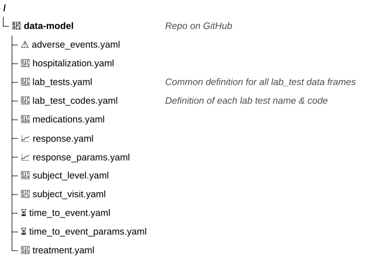
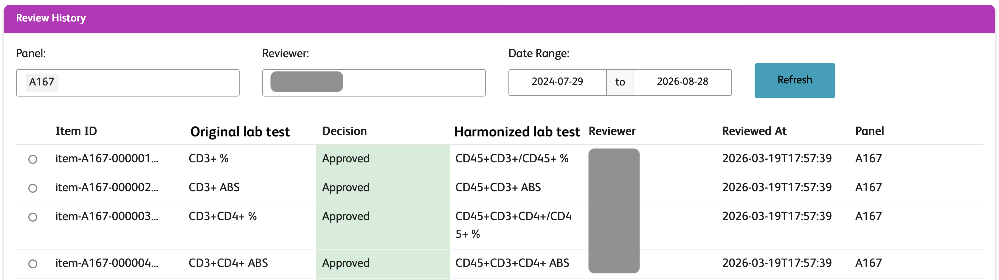

Leslie Emery
How do a patient’s pre-treatment biomarker levels affect their response to treatment?
Stock image
Demographics data model
unique_subject_id:
key: true
data_type: character
character_pattern: ^[A-Z0-9-]+-\d+-\d+$
site_id:
data_type: character
character_pattern: ^\d+$
baseline_height_cm:
data_type: numeric
numeric_units: centimeter
diagnosis_date:
data_type: Date
date_format: "%Y-%m-%d"
actual_arm:
data_type: factor
factor_allowed_values:
- Arm A
- Arm B
- Arm C
Demographics config for trial X
unique_subject_id:
- {file: adsl.csv, column: USUBJID, data_type: character}
site_id:
- {file: adsl.csv, column: SITE, data_type: character}
baseline_height_cm:
- {file: adsl.csv, column: HEIGHTBL, data_type: numeric,
numeric_units: inch}
diagnosis_date:
- {file: adsl.csv, column: DIAGDTC, data_type: character}
actual_arm:
- {file: adsl.csv, column: ACTARM, data_type: character}Demographics config for trial Y
❶ Use data dictionaries, not actual data
❷ LLMs and humans have different constraints
1. Transformations on one dataset file
harmonize_trial_dataset <- function(config, model){
source_df <- read_trial_data_file(config)
harmonized_dataset <- source_df |>
select(all_of(c(config$model_colname, config$primary_keys))) |>
rename(setNames(config$source_colname, config$model_colname)) |>
harmonize_data_types(config, model) |>
harmonize_units(config, model) |>
harmonize_missing(config, model) |>
harmonize_factor_values(config, model)
}
harmonize_trial_dataset(
config = read_config_file("trialX_demographics_config.yaml"),
model = get_data_model("demographics")
)2. Repeat for all datasets in the trial
trialX_configs <- purrr::map(
list("adverse_events", "demographics", "medications"),
\(dataset) read_config_file(get_study_config(dataset, "trialX"))
)
data_models <- purrr::map(
list("adverse_events", "demographics", "medications"),
get_data_model
)
trialX_harmonized <- purrr::map2(
trialX_configs,
data_models,
\(c, m) harmonize_trial_dataset(config = c, model = m)
)3. Repeat for all trials
unique_subject_id:
definition: Unique identifier for each subject across trials
model: {data_type: character,
character_pattern: '^[A-Z0-9-]+-\d+-\d+$',
key: true}
inputs: [{trial: X, file: adsl.csv, column: USUBJID},
{trial: Y, file: dm.csv, column: subject_id}]
baseline_height_cm:
definition: Subject height at baseline
model: {data_type: numeric,
numeric_units: centimeter}
inputs: [{trial: X, file: adsl.csv, column: HEIGHTBL,
numeric_units: inch}]
How do a patient’s pre-treatment biomarker levels affect their response to treatment?
Be flexible to rapid change AWS Bedrock agent → langchain agent → Claude Code plugin
Design with structured files .yaml or .json or even .xml
Look for data wrangling patterns
Leslie Emery
linkedin.com/in/leslie-emery/